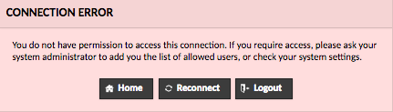
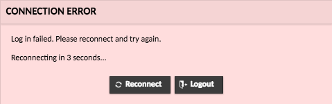

Using Web Shell and Desktop on Atmosphere
This guide will help you to understand and use the Web Desktop and Web Shell on CyVerse’s Atmosphere platform. They are both powered by Apache Guacamole.
The official Guacamole user guide can be found here, but please note that not all features will be available on Atmosphere.
General
Use CTRL + ALT + SHIFT to open a side menu. From here, you can browse system files and
Web Shell
- Connect using the “Open Web Shell” button on the instance details page of Atmosphere.
- Uses SSH protocol with public key authentication to connect to your instance. The private keys are created and stored by Atmosphere and Guacamole.

Web Desktop
- Connect using the “Open Web Desktop” button on the instance details page of Atmosphere.
- Uses VNC protocol.

Copy/Paste
In order to copy and paste between your local computer and your instance using our Web Desktop and Web Shell, you must use the text box in the side menu. The reason that you cannot directly copy/paste is that most browsers have strict control of clipboard access. If you use Google Chrome, you can install this extension to allow access to your clipboard. A full explanation of this is available on the Apache Guacamole website.
- On Web Shell: text from your instance will appear in the text box if you highlight it. Paste text into the terminal by right-clicking.

- On Web Desktop: use regular copy/paste methods:
CTRL+C/CTRL+V, or right-click and find “Copy”/“Paste”. Note that when using a Terminal within the Desktop, copy/paste commands change toCTRL+SHIFT+C/CTRL+SHIFT+V

Changing Resolution of Web Desktop
Open a terminal and use these commands:
# Show the available resolution options
xrandr -q
# Change the resolution using the resolution or the corresponding number.
xrandr -s <choice>
# Example: xrandr -s 1920x1080
# or xrandr -s 6
Persisting Session in Web Shell
When you close a Web Shell window, your shell session ends and is not preserved. You may wish to make your shell session persistent, so that you can disconnect from it and reconnect later. For this, we recommend using a terminal multiplexer, either tmux or screen on your instance. Both of these may already be installed. Both can be used to keep your shell session active, and connect to it later, even if your browser disconnects.
tmux/screen Crash Course
Create a new terminal multiplexer session and activate it:
Now you can do your work inside terminal multiplexer, and your session will be preserved even if you get disconnected.
You can explicitly “detach” from your terminal multiplexer session by pressing CTRL+B in tmux or CTRL+A in screen, followed by pressing the d key – though this is not necessary when disconnecting Web Shell. You can just close the browser and your terminal multiplexer session will stay active.
When you re-connect to Web shell, you can re-attach to the first available terminal multiplexer session (i.e. the one that you opened earlier) with:
This should bring you back to the same shell, exactly where you were earlier! It’s possible to have more than one terminal multiplexer session open, and this may cause confusion. You can list all active terminal multiplexer sessions with:
If you see multiple sessions listed, you can connect to a named session (e.g. session 0) with
For more information on using tmux, please see tmux documentation (e.g. man tmux) and other articles on the web (e.g. A Gentle Introduction to tmux).
For more information on using screen, please see screen documentation (e.g. man screen) and other articles on the web (e.g. GNU Screen on Arch Wiki).
Possible Errors
Connection Error - closed the connection

This means that you were successfully authenticated by the Guacamole server, but it was unable to connect to your instance. This could be an issue with the instance, or perhaps with the server. If it continues to happen after a few tries, contact support. The most likely problem is the VNC server closed.
You can try to fix this yourself with these commands:
# Kill the Guacamole-specific VNC server
# If you get an error, that means the server is already killed
vncserver -kill :5
# Restart the VNC server
vncserver -config ~/.vnc/config.guac :5Connection Error - do not have permission

This means you are not authenticated for that connection. You have been authenticated by Guacamole but the instance you are trying to connect to is not your own. If you encounter this error, contact support.
Connection Error - failed to login

This error occurs on SSH connections when the user mistypes the password or there is a key mismatch. If you still cannot connect after about 3 tries, contact support through Intercom so we can fix the SSH keys.